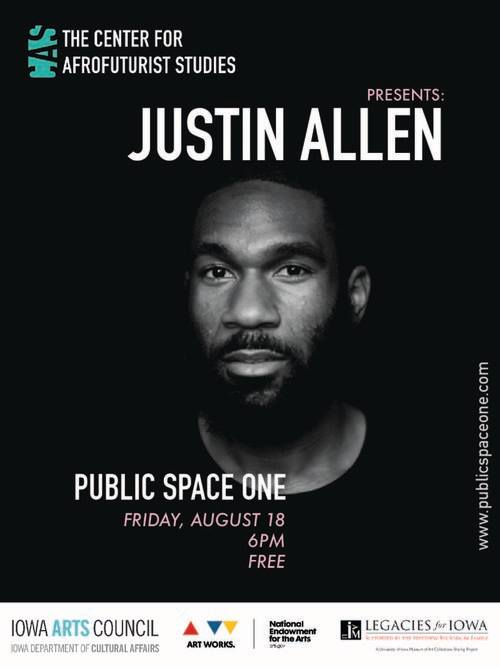

Reading: Justin Allen
Aug. 18, 2017, 6:00pm

Public Space One
120 N. Dubuque St,
Iowa City, IA 52245
120 N. Dubuque St,
Iowa City, IA 52245
Justin Allen is a writer and performer from Northern Virginia that lives and works in New York City. He has performed at Performance Space New York and Brooklyn Museum with fellow artist and frequent collaborator Devin Kenny, and performed solo work at Movement Research at the Judson Church, BAAD! Bronx Academy of Arts and Dance, and ISSUE Project Room, among other venues. He has read his poetry, fiction, and nonfiction at venues such as The Poetry Project at St. Mark’s Church, Kampnagel (Hamburg, DE), and Gavin Brown’s Enterprise.